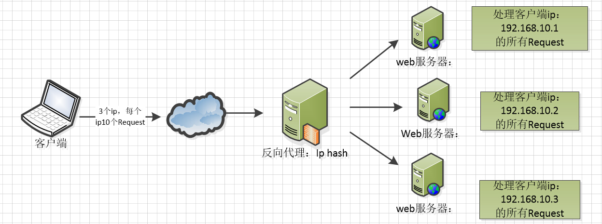

序文
Nginxは、ロシアでアクセス数第2位のrambler.ruサイトのためにlgor Sysoev氏によって設計・開発されました。2004年のリリース以来、オープンソースの力により、成熟と完成に近づいています。
Nginxは機能が豊富で、HTTPサーバーとしても、リバースプロキシサーバー、メールサーバーとしても利用できます。FastCGI、SSL、Virtual Host、URL Rewrite、Gzipなどの機能をサポートしています。また、多くのサードパーティ製モジュール拡張をサポートしています。
Nginxは、その安定性、機能セット、サンプル設定ファイル、低いシステムリソース消費により、後発ながら追い上げて、世界のアクティブなウェブサイトの12.18%（約2220万サイト）という使用率を獲得しています。
自慢話はこの辺にしておきます。まだ物足りなければ、百度百科やいくつかの本に、そのような誇張された称賛がたくさん見つかります。
Nginxのよく使う機能
1、HTTPプロキシ、リバースプロキシ：Webサーバーの最も一般的な機能の一つであり、特にリバースプロキシです。
ここで2枚の図を示します。フォワードプロキシとリバースプロキシを説明しています。詳細は、みなさんで資料を調べてみてください。

Nginxはリバースプロキシとして動作する際、安定したパフォーマンスを提供し、柔軟な設定が可能な転送機能を提供します。Nginxはさまざまな正規表現マッチに応じて、異なる転送戦略を取ることができます。たとえば、画像ファイルで終わるものはファイルサーバーへ、動的ページはWebサーバーへ転送します。正規表現を正しく書き、対応するサーバーソリューションがあれば、思いのままに操作できます。また、Nginxは戻り結果に対してエラーページへのリダイレクトや異常判定などを行います。もし割り当てられたサーバーに異常が発生した場合、リクエストを別のサーバーに再転送し、異常のあるサーバーを自動的に除外します。
2、負荷分散
Nginxが提供する負荷分散戦略には、組み込み戦略と拡張戦略の2種類があります。組み込み戦略は、ラウンドロビン、加重ラウンドロビン、IPハッシュです。拡張戦略は、自由自在で、あなたが想像できないものはないほどです。あらゆる負荷分散アルゴリズムを参考にして、それらを一つずつ実装することができます。
3つの図を示します。これら3つの負荷分散アルゴリズムの実装を理解してください。

IPハッシュアルゴリズムは、クライアントのリクエストIPに対してハッシュ操作を行い、そのハッシュ結果に基づいて、同じクライアントIPのリクエストを同じサーバーに振り分けて処理します。これにより、セッションが共有されない問題を解決できます。

3、Webキャッシュ
Nginxは、ファイルごとに異なるキャッシュ処理を行うことができ、柔軟な設定が可能です。また、FastCGI_Cacheをサポートしており、主にFastCGIの動的プログラムをキャッシュするために使用します。サードパーティ製のngx_cache_purgeと組み合わせることで、指定したURLのキャッシュ内容を追加・削除して管理できます。
4、Nginx関連アドレス
ソースコード：https://trac.nginx.org/nginx/browser
公式サイト：http://www.nginx.org/
Nginx設定ファイルの構造
ダウンロードが完了し、インストールファイルがあれば、confフォルダ内のnginx.confファイルを開いてみてください。Nginxサーバーの基本設定、デフォルト設定もここに格納されています。
nginx.conf のコメント記号は：#
デフォルトのNginx設定ファイルnginx.confの内容は以下のとおりです：
#user nobody;
worker_processes 1;
#error_log logs/error.log;
#error_log logs/error.log notice;
#error_log logs/error.log info;
#pid logs/nginx.pid;
events {
worker_connections 1024;
}
http {
include mime.types;
default_type application/octet-stream;
#log_format main '$remote_addr - $remote_user [$time_local] "$request" '
# '$status $body_bytes_sent "$http_referer" '
# '"$http_user_agent" "$http_x_forwarded_for"';
#access_log logs/access.log main;
sendfile on;
#tcp_nopush on;
#keepalive_timeout 0;
keepalive_timeout 65;
#gzip on;
server {
listen 80;
server_name localhost;
#charset koi8-r;
#access_log logs/host.access.log main;
location / {
root html;
index index.html index.htm;
}
#error_page 404 /404.html;
# redirect server error pages to the static page /50x.html
#
error_page 500 502 503 504 /50x.html;
location = /50x.html {
root html;
}
# proxy the PHP scripts to Apache listening on 127.0.0.1:80
#
#location ~ \.php$ {
# proxy_pass http://127.0.0.1;
#}
# pass the PHP scripts to FastCGI server listening on 127.0.0.1:9000
#
#location ~ \.php$ {
# root html;
# fastcgi_pass 127.0.0.1:9000;
# fastcgi_index index.php;
# fastcgi_param SCRIPT_FILENAME /scripts$fastcgi_script_name;
# include fastcgi_params;
#}
# deny access to .htaccess files, if Apache's document root
# concurs with nginx's one
#
#location ~ /\.ht {
# deny all;
#}
}
# another virtual host using mix of IP-, name-, and port-based configuration
#
#server {
# listen 8000;
# listen somename:8080;
# server_name somename alias another.alias;
# location / {
# root html;
# index index.html index.htm;
# }
#}
# HTTPS server
#
#server {
# listen 443 ssl;
# server_name localhost;
# ssl_certificate cert.pem;
# ssl_certificate_key cert.key;
# ssl_session_cache shared:SSL:1m;
# ssl_session_timeout 5m;
# ssl_ciphers HIGH:!aNULL:!MD5;
# ssl_prefer_server_ciphers on;
# location / {
# root html;
# index index.html index.htm;
# }
#}
}
nginx ファイル構造
... #全局块
events { #events块
...
}
http #http块
{
... #http全局块
server #server块
{
... #server全局块
location [PATTERN] #location块
{
...
}
location [PATTERN]
{
...
}
}
server
{
...
}
... #http全局块
}
- 1、グローバルブロック：Nginx全体に影響を与えるディレクティブを設定します。一般的には、Nginxサーバーを実行するユーザーグループ、NginxプロセスのPID保存パス、ログ保存パス、設定ファイルのインクルード、生成を許可するワーカープロセス数などがあります。
- 2、eventsブロック：Nginxサーバーまたはユーザーとのネットワーク接続に影響する設定です。各プロセスの最大接続数、接続リクエストを処理する際にどのイベント駆動モデルを選択するか、複数のネットワーク接続を同時に受け入れることを許可するか、複数のネットワーク接続のシリアル化を有効にするかなどがあります。
- 3、httpブロック：複数のserverをネストでき、プロキシ、キャッシュ、ログ定義など、ほとんどの機能およびサードパーティモジュールの設定を構成します。ファイルのインクルード、mime-typeの定義、ログのカスタマイズ、sendfileを使用したファイル転送の有無、接続タイムアウト時間、単一接続あたりのリクエスト数などです。
- 4、serverブロック：仮想ホストの関連パラメータを設定します。1つのhttp内に複数のserverを持つことができます。
- 5、locationブロック：リクエストのルーティングと、さまざまなページの処理状況を設定します。
以下に設定ファイルを示しますので、理解の参考にしてください。
########### 每个指令必须有分号结束。#################
#user administrator administrators; #配置用户或者组，默认为nobody nobody。
#worker_processes 2; #允许生成的进程数，默认为1
#pid /nginx/pid/nginx.pid; #指定nginx进程运行文件存放地址
error_log log/error.log debug; #制定日志路径，级别。这个设置可以放入全局块，http块，server块，级别以此为：debug|info|notice|warn|error|crit|alert|emerg
events {
accept_mutex on; #设置网路连接序列化，防止惊群现象发生，默认为on
multi_accept on; #设置一个进程是否同时接受多个网络连接，默认为off
#use epoll; #事件驱动模型，select|poll|kqueue|epoll|resig|/dev/poll|eventport
worker_connections 1024; #最大连接数，默认为512
}
http {
include mime.types; #文件扩展名与文件类型映射表
default_type application/octet-stream; #默认文件类型，默认为text/plain
#access_log off; #取消服务日志
log_format myFormat '$remote_addr–$remote_user [$time_local] $request $status $body_bytes_sent $http_referer $http_user_agent $http_x_forwarded_for'; #自定义格式
access_log log/access.log myFormat; #combined为日志格式的默认值
sendfile on; #允许sendfile方式传输文件，默认为off，可以在http块，server块，location块。
sendfile_max_chunk 100k; #每个进程每次调用传输数量不能大于设定的值，默认为0，即不设上限。
keepalive_timeout 65; #连接超时时间，默认为75s，可以在http，server，location块。
upstream mysvr {
server 127.0.0.1:7878;
server 192.168.10.121:3333 backup; #热备
}
error_page 404 https://www.baidu.com; #错误页
server {
keepalive_requests 120; #单连接请求上限次数。
listen 4545; #监听端口
server_name 127.0.0.1; #监听地址
location ~*^.+$ { #请求的url过滤，正则匹配，~为区分大小写，~*为不区分大小写。
#root path; #根目录
#index vv.txt; #设置默认页
proxy_pass http://mysvr; #请求转向mysvr 定义的服务器列表
deny 127.0.0.1; #拒绝的ip
allow 172.18.5.54; #允许的ip
}
}
}
上記はnginxの基本設定です。注意すべき点は以下のとおりです。
1、いくつかの一般的な設定項目：
- 1.$remote_addr と $http_x_forwarded_for は、クライアントのIPアドレスを記録するために使用します；
- 2.$remote_user：クライアントのユーザー名を記録するために使用します；
- 3.$time_local：アクセス時間とタイムゾーンを記録するために使用します；
- 4.$request：リクエストのURLとHTTPプロトコルを記録するために使用します；
- 5.$status：リクエストのステータスを記録するために使用します；成功時は200です；
- 6.$body_bytes_s ent：クライアントに送信したファイル本文のコンテンツサイズを記録します；
- 7.$http_referer：どのページのリンクからアクセスされたかを記録するために使用します；
- 8.$http_user_agent：クライアントのブラウザ関連情報を記録します；
2、thundering herd（驚群）現象：1つのネットワーク接続が到着すると、複数のスリープ中のプロセスが同時に起こされますが、接続を取得できるプロセスは1つだけです。これによりシステムパフォーマンスが影響を受けます。
3、各ディレクティブはセミコロンで終了する必要があります。
原文URL：https://www.cnblogs.com/knowledgesea/p/5175711.html
クリックしてノートを共有
<p style="font-size:14px;">ノートは本記事の内容を拡張したものである必要があります！</p><br> <p style="font-size:12px;"><a href="../tougao.html" target="_blank">記事投稿は、こちらをクリックしてください</a></p> <p style="font-size:14px;"><a href="./runoob-user-test-intro.html" target="_blank">登録招待コードの取得方法</a></p> <h3 class="text-muted"><i class="fa fa-info-circle" aria-hidden="true"></i> ノートを共有する前には必ず<a href=".." class="runoob-pop">ログイン</a>してください！</h3> <p><a href="./runoob-user-test-intro.html" target="_blank">登録招待コードの取得方法</a></p>